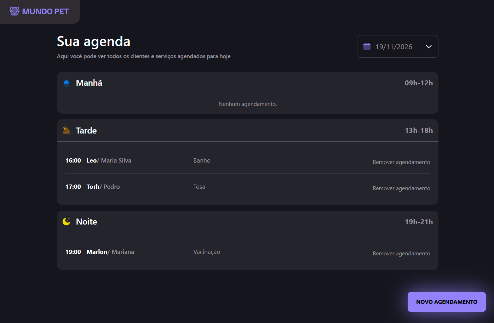
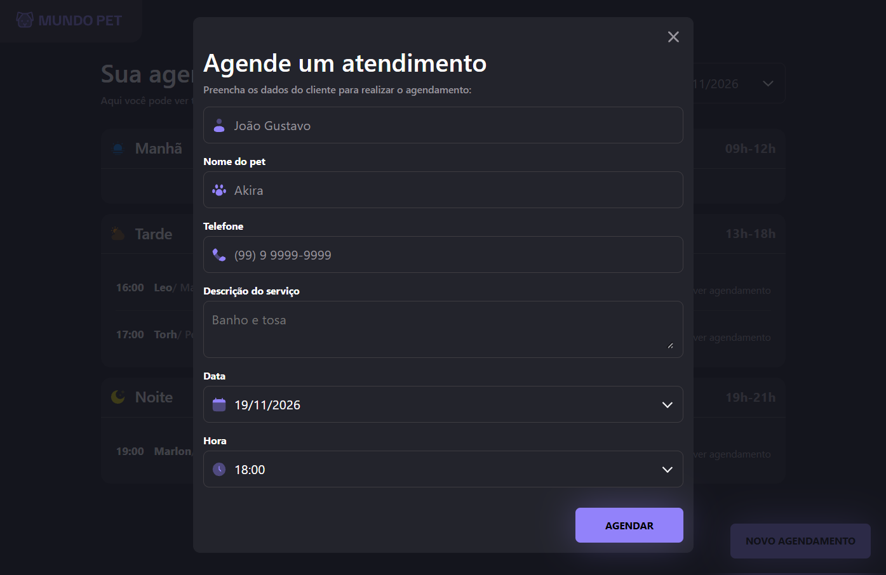

Sobre o projeto
O Mundo Pet é uma aplicação web para organizar os atendimentos de um pet shop. A interface permite visualizar os agendamentos por data e período do dia, cadastrar novos atendimentos e cancelar agendamentos existentes.


Requisitos
Antes de começar, instale os seguintes programas:
- Node.js (versão LTS): ambiente necessário para executar as ferramentas do projeto.
- npm: gerenciador de pacotes instalado junto com o Node.js.
- Git: necessário para clonar o repositório (ou baixe o projeto em ZIP pelo GitHub).
- Editor de código: recomendado para consultar os arquivos, por exemplo, Visual Studio Code.
Para conferir se Node.js e npm estão instalados, abra o terminal e execute:
node -v
npm -vSe os comandos exibirem os números das versões instaladas, o ambiente está pronto para continuar.
Instalação
Clone o repositório
No terminal, escolha uma pasta para armazenar o projeto e execute:
git clone https://github.com/Lazaro277/agendamento-petshop.gitEntre na pasta criada:
cd agendamento-petshopInstale as dependências
Com o terminal aberto dentro da pasta do projeto, execute:
npm installO npm fará a instalação das dependências declaradas no package.json. Aguarde a conclusão
antes de iniciar os servidores.
Executar a aplicação
O projeto precisa de dois processos em execução: o JSON Server, que fornece a API local, e o servidor de desenvolvimento do Webpack, que disponibiliza a interface web.
Inicie a API (JSON Server)
Abra um terminal na pasta do projeto e execute:
npm run serverEsse comando inicia a API na porta 3333. Mantenha esse terminal aberto.
Inicie a aplicação
Abra uma segunda janela de terminal, novamente dentro da pasta do projeto, e execute:
npm run devO Webpack iniciará o servidor de desenvolvimento. Acesse no navegador o endereço:
http://localhost:3000Como utilizar
- Na tela principal, selecione a data desejada para consultar os atendimentos.
- Clique em Novo Agendamento para abrir o formulário.
- Informe o nome do tutor, nome do pet, telefone e descrição do serviço.
- Selecione a data e escolha um dos horários disponíveis.
- Clique em Agendar para salvar o atendimento.
- Para remover um atendimento, utilize a opção Remover agendamento e confirme o cancelamento.
Os agendamentos são apresentados separados em manhã, tarde e noite, em ordem cronológica dentro de cada período.
Estrutura e armazenamento dos dados
O projeto utiliza o arquivo server.json como base de dados local do JSON Server. Os registros
são armazenados nesse arquivo durante a execução local.
A configuração da URL da API fica em src/services/api-config.js, atualmente apontando para
http://localhost:3333.
Os principais comandos disponíveis no projeto são:
npm run dev # inicia o servidor de desenvolvimento
npm run server # inicia a API local
npm run build # gera a versão de produção na pasta distProblemas comuns
O comando npm não é reconhecido
Verifique se o Node.js foi instalado corretamente. Feche e abra novamente o terminal após a instalação e
confira com node -v e npm -v.
A aplicação não carrega os agendamentos
Confirme se o terminal do JSON Server continua aberto e se a API está disponível em
http://localhost:3333.
A porta já está em uso
Verifique se outro processo já está utilizando a porta 3000 ou 3333. Encerre a
execução anterior, se houver, antes de iniciar novamente.
Como encerrar os servidores?
Em cada terminal, pressione Ctrl + C.